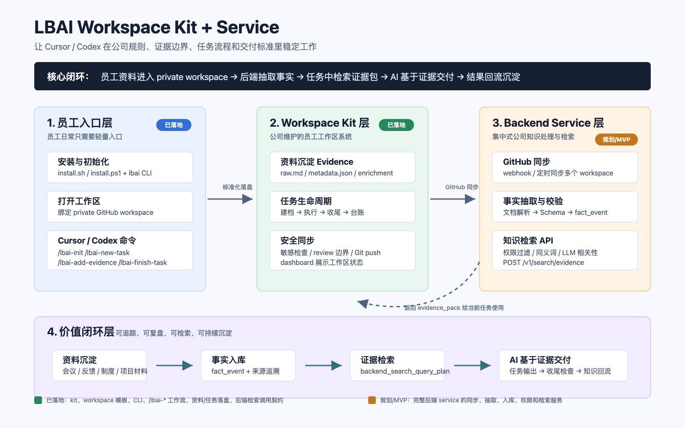

聊天不可追踪
任务目标、缺失信息、执行过程和最终输出散落在对话里，无法成为可交接的正式工作记录。
Product Feature Overview
LBAI Workspace Kit 让 Cursor / Codex 在公司规则、证据边界、任务流程和交付标准里工作； 后端知识 Service 把个人工作沉淀为可检索、可复用、可审计的组织知识。
Product Overview
通用模型可以回答问题，但企业真正需要的是把任务、证据、权限、审计、复盘和知识沉淀连接起来。 LBAI 的切入点不是替代员工，而是把员工每天与 AI 协作产生的工作过程，变成组织可复用的数据资产。
Problem
这些断点决定了企业 AI 能不能从个人效率工具，变成可规模化的组织能力。
任务目标、缺失信息、执行过程和最终输出散落在对话里，无法成为可交接的正式工作记录。
会议纪要、客户反馈、项目材料和制度文件缺少统一入口，历史背景难以回到新任务中。
没有来源、敏感信息、review 边界和证据要求，AI 输出很难稳定进入正式业务流程。
Employee Flow
员工不需要理解复杂后端，只需要用同一套 `/lbai-*` 命令把资料、任务和交付纳入标准流程。
Capability Matrix
产品不是单点工具，而是围绕员工 AI 工作流形成的系统化能力。
| 模块 | 给员工的体验 | 给公司的价值 | 状态 |
|---|---|---|---|
| 安装与初始化 |
一条安装命令，绑定 private workspace，打开 Cursor / Codex 即可使用。
功能细节
|
降低 AI 工作区部署成本，保证每个员工工作区结构一致。 | 已落地 |
| 岗位记忆 |
保存姓名、岗位、职责边界和对话偏好。
功能细节
|
让 AI 对员工角色有稳定上下文，减少反复解释。 | 已落地 |
| 资料沉淀 |
把会议纪要、反馈、制度、项目材料保存成 evidence。
功能细节
|
把个人资料沉淀为可同步、可解析、可追溯的知识来源。 | 已落地 |
| 任务生命周期 |
`/lbai-new-task` → `/lbai-execute-task` → `/lbai-finish-task`。
功能细节
|
把 AI 协作从聊天变成可复盘的任务系统。 | 已落地 |
| 后端检索 |
`/lbai-search-artifacts` 返回后端 evidence_pack。
功能细节
|
让历史证据进入新任务，形成跨员工知识复用。 | 契约已落地 |
| AI 自迭代优化 |
`/lbai-self-iterate` 运行 Prompt Lab，用模拟任务持续优化 AI 工作效果。
功能细节
|
让 AI 工作流通过可控实验不断暴露问题、修正提示词和提升稳定性。 | 实验已落地 |
| 知识 Service |
员工无需感知同步、抽取、入库和权限过滤细节。
功能细节
|
构建公司级事实事件库、检索服务和审计能力。 | MVP |
Architecture
员工端轻量落盘，后端集中处理。这个边界让产品能先进入真实工作流，再逐步扩展为组织知识基础设施。

Execution Path
先把员工端工作流跑通，再用后端 service 承接跨员工知识沉淀和检索，最后扩展到企业级治理。
从“每个人都在用 AI”，升级到“公司正在积累 AI 可用的组织记忆”。
这就是 LBAI Workspace Kit + Service 的长期价值。Product Summary